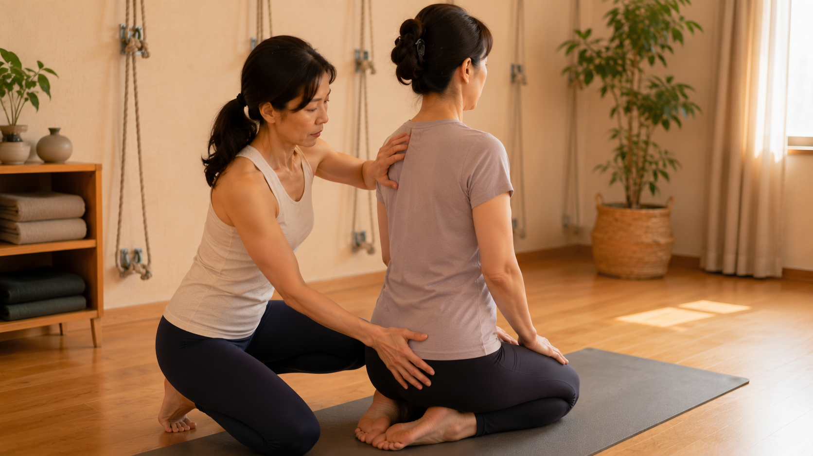

書包、低頭讀書、滑手機：孩子的體態什麼時候該注意？

- 發育期骨骼生物學：青少年快速抽高期（Growth Spurt），長骨生長板快速伸長，但肌肉肌腱長度往往適應滯後，形成短暫的「關節肌力失衡期」，此時錯誤的機械剪切力極易在骨骼塑形時定型。
- 書包負重工程學：書包總重量不得超過孩子體重的 10%–15%，重書緊貼後背內層，書包底部切齊骨盆髂骨上緣，嚴禁單肩背負造成骨盆代償側傾。
- 居家黃金篩檢法：落實「亞當氏前彎測試（Adam's Forward Bend Test）」，若前彎時單側胸背或腰部隆起高度差 > 1 公分，高度疑似特發性脊椎側彎，應優先就醫小兒骨科。
- 教育思維翻轉：用「定時起身活動」取代疲勞轟炸式的「坐正一點」；透過無重力自重卸載的溫和練習，喚醒大腦深層本體感知。
每天清晨看著孩子背著沉甸甸的巨大書包、整個人彎腰駝背走出家門；傍晚放學回到家，寫功課時整顆頭幾乎貼在桌面上；好不容易休息片刻，一坐下沙發又整個人滑成一團、垂著頭瘋狂滑手機……相信許多家長看在眼裡，心裡都曾閃過無數次焦慮的疑問：「這樣骨頭會不會長歪？」「是不是有駝背或脊椎側彎？」「到底該不該帶去矯正？」但同時又擔心自己是否小題大作。面對發育黃金期的青少年體態，家長最需要的不是焦慮的責罵，而是讀懂「骨骼發育生理學」與具備客觀的居家篩檢能力。
青少年骨骼發育生物學：高可塑性與肌肉滯後適應
孩子的身體結構與成年人存在根本上的生物力學差異。在青春發育快速抽高期（Pubertal Growth Spurt，女生約 10–12 歲，男生約 12–14 歲），骨骼與軟組織正經歷激烈的動態演變：
- 生長板與肌肉發展的不對等（Musculoskeletal Asynchrony）：在生長激素與性荷爾蒙刺激下，四肢長骨與脊椎骨骺生長板（Physeal Plate）迅速分裂拉長；然而，周圍附著的深層肌肉、肌腱與肌筋膜組織的合成速度往往跟不上骨骼生長進度。這種長度差會引發暫時性的關節僵硬、深層肌力不足與本體協調遲鈍，使孩子在站立或坐姿時自然呈現「鬆垮垮」的代償懶散態。
- 休特-沃爾克曼法則（Hueter-Volkmann Law）：這是骨骼生物力學最核心的定律之一——未閉合的骨骼生長板在受到過度機械性壓力時生長會被抑制，而在張力拉扯側生長則會加速。這意味著：若孩子在發育期長期承受非對稱的單側負重（如單肩背重書包、翹二郎腿、單側手撐頭寫字），骨骼會在持續的單側壓迫下逐漸發育成左右厚度不一的楔形椎體，將功能性姿勢不良永久固化為骨骼結構性畸形。
書包力學工程學：重量上限、配重與高度設定
沉重的書包是摧毀青少年脊柱生理前凸的頭號元兇。依據國際小兒骨科學會（POSNA）與人體工學研究，背負書包必須嚴格遵循三大力學規範：
| 力學維度 | 黃金工程標準 | 背後的生理破壞機制 |
|---|---|---|
| 總重安全上限 | 嚴格不超過學生體重的 10%–15%（40 公斤學童不得超過 4–6 公斤）。 | 重量超過體重 15% 時，學童軀幹會自發前傾大於 15 度以維持平衡，頸椎前伸使椎間盤承受暴增 300% 之剪切力。 |
| 內部重心配置 | 最沉重的大本教科書緊貼靠背內層，輕便文具與水壺置於外層兩側。 | 沉重物體遠離背部會形成巨大的向後槓桿力矩，強迫腹肌緊縮折腰代償，加劇圓肩駝背。 |
| 背帶長度與位置 | 調緊雙肩寬版背帶，書包底端精準對齊骨盆髂骨上緣（腰帶位置）。 | 背帶過長使書包懸吊垂掛於臀部以下，晃動時會引發腰椎反覆撞擊磨損，誘發青少年椎弓峽部解離。 |
| 雙肩 vs 單肩背負 | 絕對嚴禁單肩側背，必須雙肩對稱背負並扣上胸前固定扣。 | 單肩背負會強迫單側提肩胛肌與腰方肌持續痙攣，骨盆單側代償性抬高，直接誘發功能性 C 型側彎。 |

家長必學：亞當氏前彎測試（Adam's Forward Bend Test）
當懷疑孩子是否有潛在脊椎側彎時，家長切勿憑肉眼直覺猜測，應每三至六個月定期進行標準的亞當氏前彎篩檢：
- 操作步驟：讓孩子脫去寬鬆外套或上衣，光腳站立於平整地面；雙腳併攏、膝關節完全伸直打直；雙手手掌合十、雙臂自然垂直向下放鬆；上半身由髖關節處緩慢向前彎腰約 90 度，呈現拱橋般背部水平狀態。
- 家長觀察角度：家長請坐在孩子正後方，使自己的雙眼視線嚴格平齊孩子前彎時的背部水平切線。
- 陽性判斷指標：
- 正常對稱背部：胸椎與下腰部兩側肌肉高度完全水平一致，脊柱兩側背部呈平滑圓弧。
- 疑似結構性側彎（陽性）：單側胸廓肋骨明顯隆起形成凸峰（Rib Hump，肋骨駝峰），或下腰部單側豎脊肌隆起。若兩側高度差超過 1 公分，代表脊椎椎體不僅側偏更伴隨三維椎體旋轉（Vertebral Rotation），此為特發性脊椎側彎（AIS）之核心臨床表徵，應立即前往小兒骨科拍攝全脊柱站立正側面 X 光片測量 Cobb 角。
日常四大肉眼可辨的體態預警信號
在日常生活中，家長可以留心觀察以下四個具備力學意義的不對稱線索：
- 雙肩高度不對稱：站立時兩邊肩膀高低差超過 1.5 公分，衣服領口或背心肩帶總是莫名其妙朝同一側滑落。
- 骨盆兩側髂棘不等高：雙手叉腰時，兩側骨盆最高點不在同一水平線上，穿長褲時褲腳長度總有一邊拖地。
- 腰部皮膚皺摺不對稱：雙臂自然下垂時，兩側腰部出現的皮膚皺褶一側深陷、另一側平緩。
- 軀幹臂部空隙不對稱（Trunk-Arm Clearance）：雙手垂直下垂放鬆時，身體軀幹兩側與手臂內側形成的三角形空隙，左右兩邊大小嚴重不一致。
醫療急症紅旗：哪些狀況必須立刻尋求小兒骨科？
若孩子除了姿勢不良外，還伴隨以下任何紅旗病徵，切勿嘗試民間推拿、正骨或自行購買背帶矯正器，必須立即前往大型醫院兒科或小兒骨科就醫：
- 持續性背痛或夜間痛醒：青少年脊柱在未受外傷下突發持續疼痛，甚至在半夜痛醒，必須高度警惕骨樣骨瘤（Osteoid Osteoma）、脊椎感染或神經發育異常。
- 下肢神經功能缺失：雙腿出現發麻、走路經常莫名其妙絆倒摔跤、下肢肌腱反射異常或大小便排泄控制困難。
- 家族性側彎病史伴隨快速進展：直系親屬中有中重度脊椎側彎病史，且孩子在近半年內體態歪斜顯著惡化。
翻轉管教思維：用「環境與動態」取代無效的「坐正一點」
許多家長每天對著孩子不斷喊：「坐正一點！」「不要駝背！」但往往兩分鐘後孩子又癱軟下去。我們必須明白：這並不是孩子故意不聽話，而是神經肌肉耐力的物理極限。
在骨骼快速生長期，深層背部姿勢肌群在缺乏足夠阻力訓練下，根本無法連續等長收縮數小時。不斷的言語指責只會讓孩子對自己的身體產生挫折與叛逆感。真正有建設性的日常引導應聚焦於兩大層面：
- 工學環境適應：配置可隨身高升降的書桌椅，讓孩子寫作業時腳掌能踏地、手肘自然平靠在桌面上，終止懸空聳肩代償；將閱讀架傾斜 30–45 度，讓視線平視書本，切斷低頭折頸。
- 建立「每坐 40 分鐘起身」的動態生理鐘：在桌上放一個溫馨的小沙漏或番茄鐘，時間一到，全家一起站起來做 30 秒大伸展或喝杯溫水。動態的頻繁切換，遠比逼迫身體僵硬固化在某個姿勢更符合人體生理學。
孩子的體態歪斜到底在什麼程度？用 2D 客觀骨骼數據解析
與其在家胡亂猜測與擔憂，不如透過 AI 體態檢測量化孩子的雙肩高低差角度、骨盆水平線與頭部前傾公分數，由專業老師當面為家長解讀數據，清晰分流「習慣調整」與「醫療轉介」界線。
預約首次 NT$299 AI 體態檢測壁繩瑜伽能為成長中的青少年帶來什麼？
對於成長中的孩子，運動的目的絕非過早追求肌肉肥大或極限伸展，而是建立一生受用的「身體本體感知記憶（Kinesthetic Intelligence）」：
- 零重力自重卸載（Zero Axial Compression）：壁繩提供 30%～70% 的自重懸掛卸載，完全免除脊柱在重力下的壓縮風險，在安全無痛中給予緊繃的脊椎與生長板充足的減壓空間。
- 水泥結構牆的剛性力線指引：孩子站在垂直牆面前，透過後背與骨盆貼牆的觸覺回饋，大腦能瞬間清晰理解「原來中立對稱的直線在這裡」，擺脫主觀感覺的偏差。
- 強化深層核心抗扭轉能力：在抓繩與推牆的趣味互動中，自然活化深層腹橫肌與多裂肌，讓孩子在無壓力、不枯燥的氛圍中重新找回身體的平衡與自信。
本文為體態與青少年姿勢的一般衛教分享，非醫療診斷或治療。若懷疑脊椎側彎或伴隨持續疼痛、發育障礙，請務必優先諮詢小兒骨科或復健科專科醫師。
常見問題
孩子背書包總是駝背前傾，書包重量到底該如何設定上限？
依據國際兒科與運動醫學規範，學生書包總重量嚴格禁止超過孩子體重的百分之十至十五（例如四十公斤學童，書包重量必須控制在四至六公斤以內）。當重量超過體重百分之十五時，身體為了平衡重心，會強制引發頭部過度前伸、胸椎屈曲代償；同時最重書籍應緊貼後背內層，書包底部維持在骨盆髂骨上緣，嚴禁懸垂至臀部下方。
常常提醒孩子「坐正、抬頭挺胸」，為什麼通常維持不到三分鐘？
這不是孩子叛逆或不配合，而是生理耐力的限制。青少年在生長發育快速期，肌肉長度與力量發展常常滯後於骨骼長度；長時間伏案讀書會使胸大肌與腰大肌習慣性緊縮，而背部的豎脊肌與下斜方肌尚未具備長達數小時的等長收縮耐力。刻意硬挺三分鐘後肌肉便會缺氧疲乏，身體自然垮下；與其不斷口頭提醒，不如建立「每讀四十分鐘起身活動五分鐘」的動態循環。
家長如何在家透過簡單測試，判斷孩子是否有脊椎側彎風險？
最具醫學依據的居家自我檢視是「亞當氏前彎測試（Adam's Forward Bend Test）」。請孩子雙腳併攏、雙膝打直、雙手合十自然下垂，軀幹向前彎腰呈九十度；家長坐在正後方以平視視線觀察其背部兩側水平面。若發現單側胸部肋骨或下腰部肌肉有不對稱凸起隆起（肋骨峰差），即高度懷疑結構性脊椎側彎，應儘速就診小兒骨科進行全脊柱全幅 X 光檢查。
發現孩子出現高低肩或體態歪斜，可以直接報名成人體態矯正課程嗎？
嚴格禁止盲目跟練成人高強度阻力或過度扳拉課程。青少年的骨骺生長板尚未完全骨化閉合，軟組織具有高度可塑性；若存在潛在特發性脊椎側彎，不當的對稱對稱夾背或暴力旋轉反而可能加劇脊椎旋轉代償。首要步驟是透過專業醫療或精準 2D 骨骼力學檢測，分清是功能性肌肉張力失衡還是結構性問題，再介入溫和無痛的活動度引導。
壁繩瑜伽如何安全引導成長中的青少年建立良好身體本體感覺？
青少年練習壁繩的核心不在於追求體位法極限，而在於建立大腦的「身體空間幾何認知（Body Schema）」。壁繩利用專利安全繩索提供百分之三十至七十的自重卸載，能完全免除垂直重力壓迫；在水泥牆面的穩定物理支撐下，孩子能透過直觀的反作用力回饋，重新體會兩側肩胛骨對稱下沉、脊柱軸向自然拔高的輕鬆體態，把正確的好姿勢深植進發育中的神經系統。